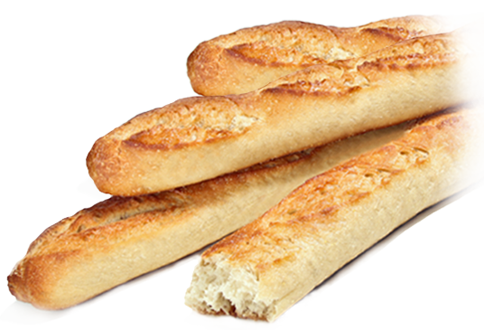
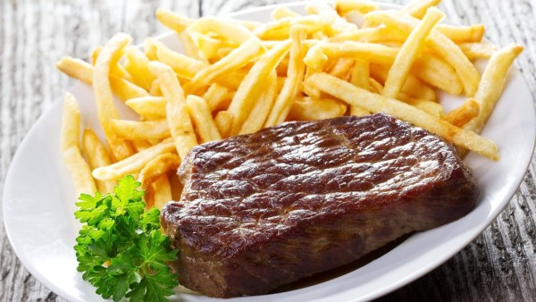
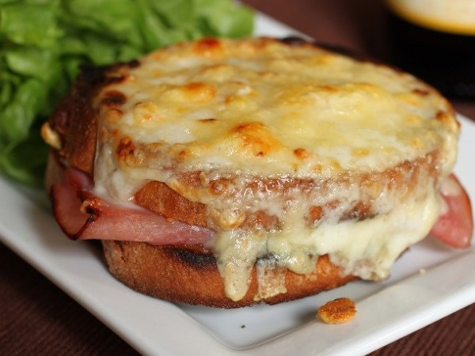
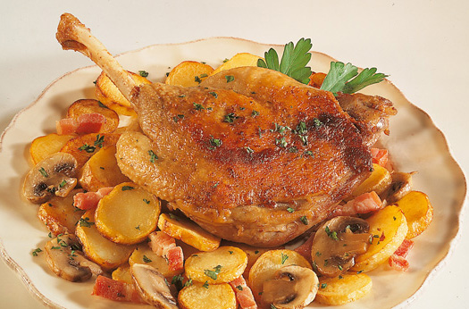
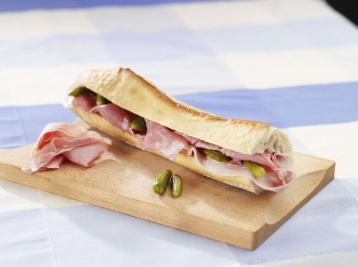
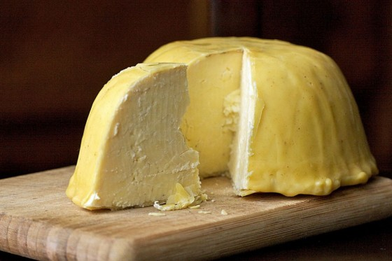
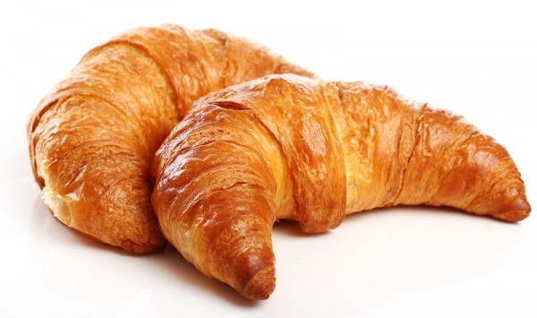
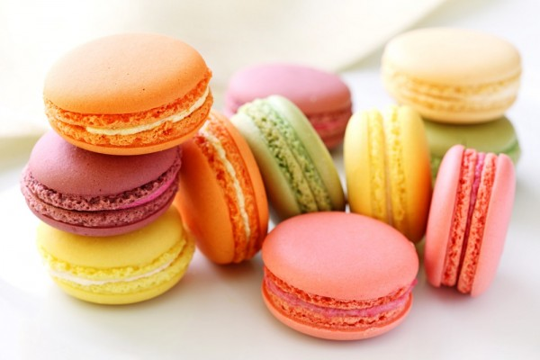
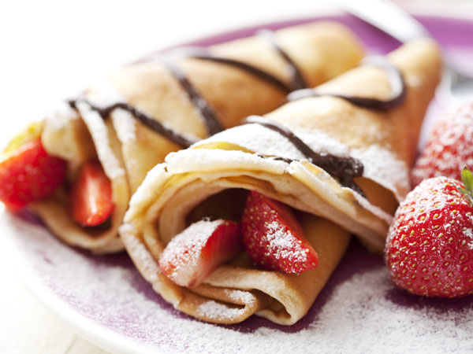

.svg)
Budući da je Pariz poznat kao svjetska gastronomska prijestolnica, obiluje vrhunskim restoranima, neki od njih su Alain Ducasse i Le Meurice. Skoro pa u svakoj ulici se može pronaći restoran, pub ili kafić u kojem možete uživati u izvrsnoj francuskoj kuhinji ili ipak samo popiti jutarnju kavu uz croissant.Ukoliko do sada niste posjetili Pariz, ova lista će vam pomoći da se usredotočite samo na najbolju hranu ovog predivnog grada.
1. Baget (Baguette)
Možemo s pravom reći da je Pariz mesto na kom možete pronaći najkvalitetnije bagete na svetu. Pariz je i grad u kom se svake godine održava takmičenje za najbolji baget. Ako se ikada nađete na ulicama Pariza, nemojte zaboraviti da uzmete po koji zalogaj bageta dok šetate Jelisejskim poljima.
2. Odrezak s pomfritom (Steak-fries)
Odrezak s malo pomfrita i malo sosa po vašem izboru je nešto što ne smete zaobići ukoliko posetite restorane Pariza. Meso je obično veoma zrelo, a krompiri su izuzetno sveži, ručno seckani i dvostruko proprženi.
3. Krok Mesje (Croque-monsieur)
Krok Mesje je sendvič koji se pravi od propržene šunke i sira. On se najčešće pravi od brioša, francuskog hleba obogaćenog puterom i jajima i obično u sebi sadrži bešamel sos. U mnogim restoranima ćete dobiti i prženo jaje na vrhu sendviča.
4. Pačiji konfi (Confit de canard)
Konfi potiče od francuske reči „confire“ i znači „očuvati“. Drugim rečima, konfi se priprema tako što se neka hrana dugo kuva kako bi se što bolje očuvala. U slučaju pačjeg konfija, pačije meso se obično kuva u sopstvenoj masti dok meso ne postane neverovatno meko i socno. Najčešći prilog uz pačji konfi jeste krompir natopljen mašću i belim lukom.
5. Žambon-ber (Jambon-beurre)
Kao i svi stanovnici većih gradova, Parižani takođe vole da jedu hranu usput. Žambon-ber je jedan od sendviča koji se jedu s nogu i koji se može kupiti u gotovo svakoj pekari. Najčešće je u obliku prepolovljenog bageta napunjenog šunkom, puterom, kornišonima i ostalim dodacima po izboru.
6. Zanatski sir od sirovog mleka
Nema ničeg gurmanskijeg u Parizu od zanatskog sira. U Parizu se na svakom ćošku mogu pronaći prodavnice sireva a izbor se kreće iz jedne krajnosti u drugu. Uvek pitajte prodavce šta vam preporučuju jer se zanatski sir uglavnom priprema sezonski.
7. Kroasan
Pored koje god pekare da prođete u Parizu, sigurno ćete osetiti puterast miris svežeg kroasana. Bilo da preferirate prazne kroasane ili punjene šunkom, sirom ili pak nekim slatkim kremom, ne zaboravite da kao pravi Francuz uz njega popijete i kafu.
8. Makaroni (Macaron)
Ne, nije u pitanju testo, u pitanju je konditorski proizvod koji između dve piškote sadrži neki preliv, šlag ili marmeladu. Posebna karakteristika ovih proizvoda jeste ta što su često obojeni prehrambenim bojama u razne boje.
9. Krep (Crêpes)
Krep iliti tanke palačinke možete pronaći bilo gde u Parizu. Iako možete isprobati krep sa raznim ukusima. Tradicionalni poslastičari ih najčešće prave sa puterom i šećerom.


©Anđela Lovrić 2023